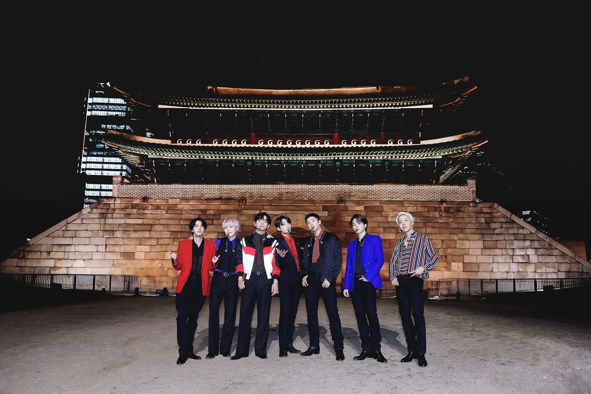
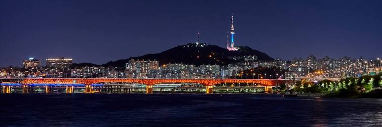
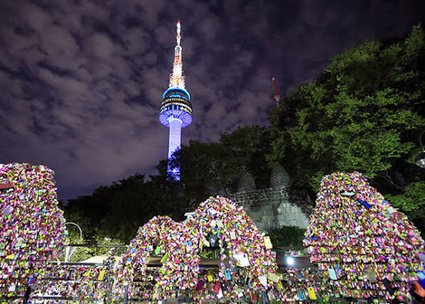
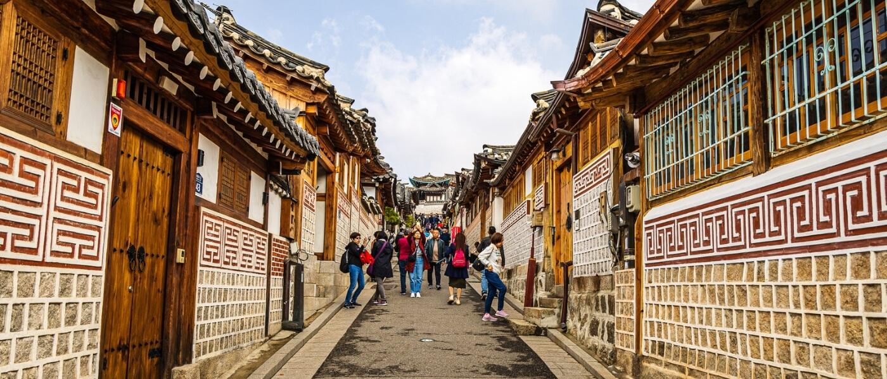
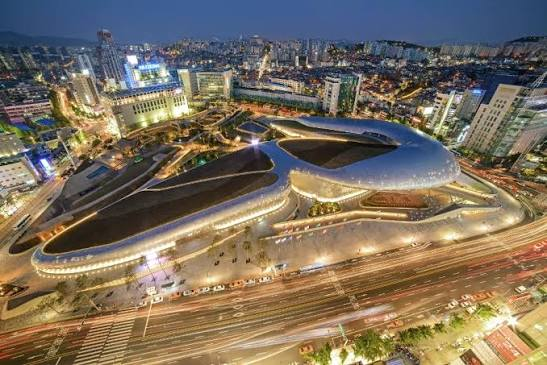
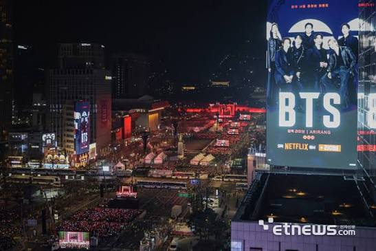
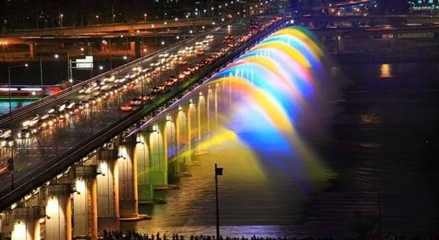
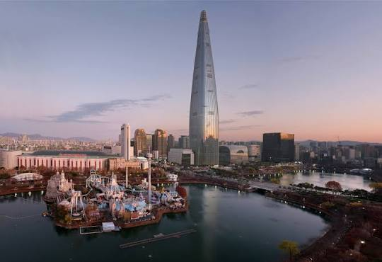
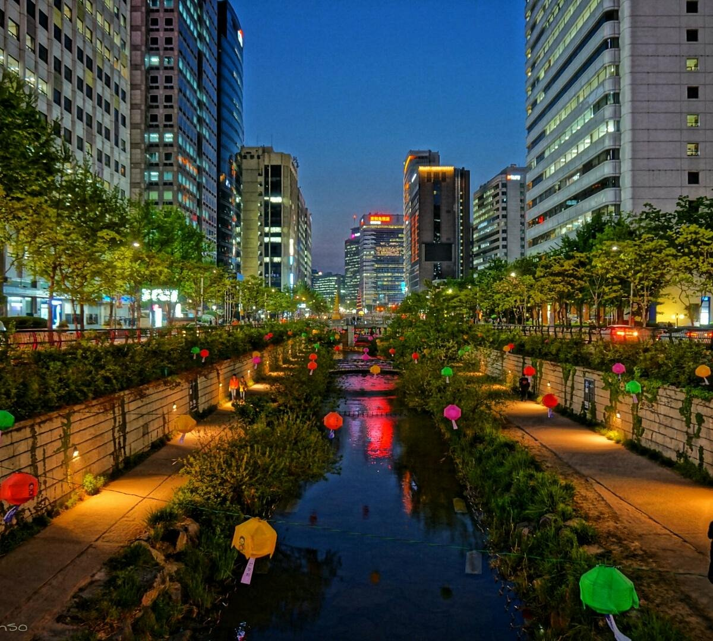

Palacio Gyeongbokgung
Construido en 1395, es el mayor de los cinco palacios de la dinastía Joseon. Presencia el cambio de guardia frente a la puerta Gwanghwamun.
Distrito Jongno · Cerrado los martes안녕하세요! Corea del Sur · Guía de viaje
Palacios de dinastía, casas hanok, torres de cristal y una ciudad que no duerme. Te ayudamos a recorrerla con destinos, paquetes e itinerarios pensados para ti.
Ver paquetes Explorar destinos

목적지 · Destinos
Cuatro imprescindibles (명소) para entender la ciudad.

Construido en 1395, es el mayor de los cinco palacios de la dinastía Joseon. Presencia el cambio de guardia frente a la puerta Gwanghwamun.
Distrito Jongno · Cerrado los martes
Sube en teleférico al monte Namsan y contempla la ciudad entera desde 236 metros. Al atardecer, miles de candados de amor brillan en las vallas.
Distrito Yongsan · Mejor al atardecer
Callejuelas empinadas con más de 600 años de historia entre casas de tejas curvas, talleres artesanales y casas de té.
Entre Gyeongbokgung y Changdeokgung · Visita en silencio
La obra curva de Zaha Hadid reúne exposiciones, moda y un jardín de rosas con luces LED. Los mercados vecinos abren hasta la madrugada.
Distrito Jung · Abierto hasta tarde갤러리 · Galería
Un vistazo a los lugares que verás en tu viaje.




패키지 · Paquetes
Precios por persona en dólares, en habitación doble. Valores referenciales.
4 días · 3 noches
$690
6 días · 5 noches
$1.180
8 días · 7 noches
$1.690
일정 · Itinerario
Cuatro días de actividades organizadas por horario.
문의 · Consultas
Cuéntanos qué te gustaría vivir en Seúl y te responderemos en menos de 24 horas.
consultas@hola@visitaseul.example